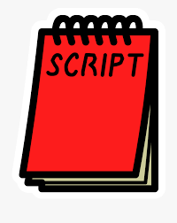

Что такое скрипт
Сценарный язык (язык сценариев, жарг. скриптовый язык; англ. scripting language) — высокоуровневый язык сценариев (англ. script) — кратких описаний действий, выполняемых системой. Разница между программами и сценариями довольно размыта. Сценарий — это программа, имеющая дело с готовыми программными компонентами.Согласно Джону Устерхауту, автору языка Tcl, высокоуровневые языки можно разделить на языки системного программирования (англ. system programming languages) и сценарные языки (англ. scripting languages). Последние он также назвал склеивающими языками (англ. glue languages) или языками системной интеграции (англ. system integration languages). Сценарии обычно интерпретируются, а не компилируются, хотя сценарные языки программирования один за другим обзаводятся JIT-компиляторами.В более узком смысле под скриптовым языком может пониматься специализированный язык для расширения возможностей командной оболочки или текстового редактора и средств администрирования операционных систем.
